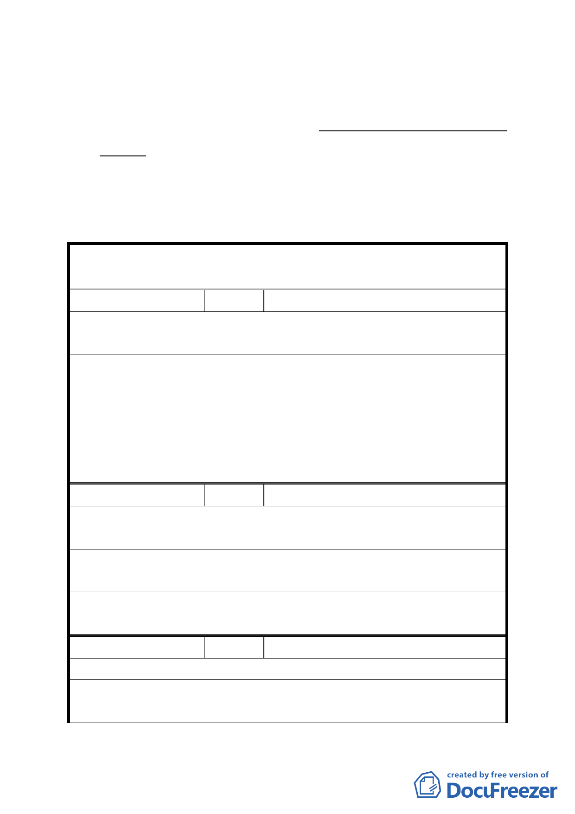

勵規定及」一段文字，計畫案名依市府本次會議所提意見修
正為「變更臺北市士林區光華段四小段 794 地號機關用地（供
天文科學館使用）為機關用地（供臺北市政府相關機關及設
施使用）細部計畫案」，以及請市府於計畫書內加強說明本計
畫放寬建蔽率之理由外，其餘依市府公展計畫書圖內容通過。
二、公民或團體所提意見審議決議詳如綜理表。
臺北市都市計畫委員會 公民或團體陳情意見綜理表
案 名 變更臺北市士林區 4 小段 794 地號機關用地（供天文科學館
使用）為機關用地（供臺北藝術中心使用）細部計畫案
編號
陳情理由
建議辦法
委員會
決議
1 陳情人 陳中和（義信里里長）
請考慮停車場不足問題。
充分利用空間設立停車場。
1.依市府說明本基地未來將依實際需求設置停車位，以自行
吸收停車需求。另基地北側士林紙廠大型開發案之獎停停
車空間及承德公園地下停車場，應可紓解士林地區停車需
求。。
2.本案有關停車位設置規定，同意依市府公展計畫書內容通
過。
編號
陳情理由
建議辦法
委員會
決議
2 陳情人 陳洲平（承德里里長）
1.增加停車。
2.周邊能有繁榮誘因。
1.多設停車位。
2.加強建物特殊性。
同編號 1 決議。
編號
陳情理由
建議辦法
3 陳情人 邱德旺（仁勇里里長）
此路段需要大量停車空間。
請在此地號內全面積最少能增加 1 層樓以上作停車之用。
24